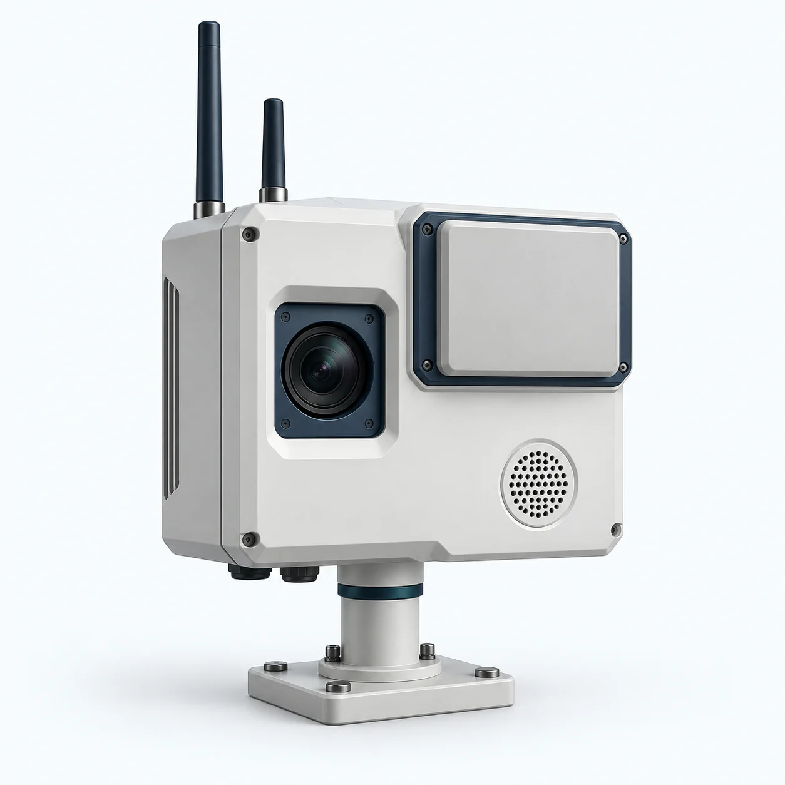

PASSIVE COUNTER-UAS INTELLIGENCE
DE ORB fuses RF, acoustic and optical sensing into one silent layer of airspace awareness, built for contested skies over Europe's critical assets.
LIVE AIRSPACE
UAS DETECTED
Active radar tells the adversary exactly where you are. DE ORB doesn't. We turn ambient signals into trusted airspace intelligence, while staying completely silent.
CAPABILITIES
No emissions. Nothing for a threat to detect, jam or target.
RF, acoustic and EO-IR combined into a single confident track.
AI separates real drone threats from birds, clutter and noise.
Built in Europe. Rapid to install. No fixed infrastructure required.
LIVE DETECTION
A single passive node picks up a drone the moment it enters range — no radar pings, no transmissions, just quiet, continuous listening across RF, acoustic and optical.

THE HARDWARE
Receiving antennas pick up radio-frequency emissions already present in the environment — no transmission required.
An external-signal receiver reads reflections already in the air, turning ambient broadcasts into a detection surface.
A high-resolution lens supplies visual confirmation once a track is flagged by the other sensors.
A microphone array listens for the sound signature rotors and engines leave in the air.
WHERE IT'S NEEDED
Airports, ports, energy sites and public spaces — DE ORB's nodes sit quietly at the places people already depend on.
SOLUTIONS
“ The question is how will you protect if you can't detect ”
HOW IT WORKS
Distributed passive nodes listen across RF, acoustic and optical.
Signals are correlated into a single real-time airspace picture.
Operators get classified, actionable tracks in seconds.
CONTACT
We work with defense, government and critical-infrastructure partners.
info@de-orb.com